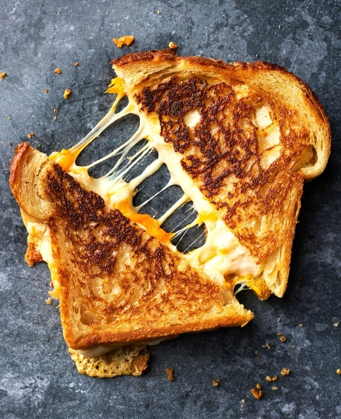

A grilled cheese sandwich is a sandwich that is made by grilling cheese between slices of bread. It is usually served as a snack, or a meal usually with a side of soup or a salad. The type of cheese used can vary, but the most common are cheddar and mozzarella. Some variations include provolone, gouda, and blue cheese.